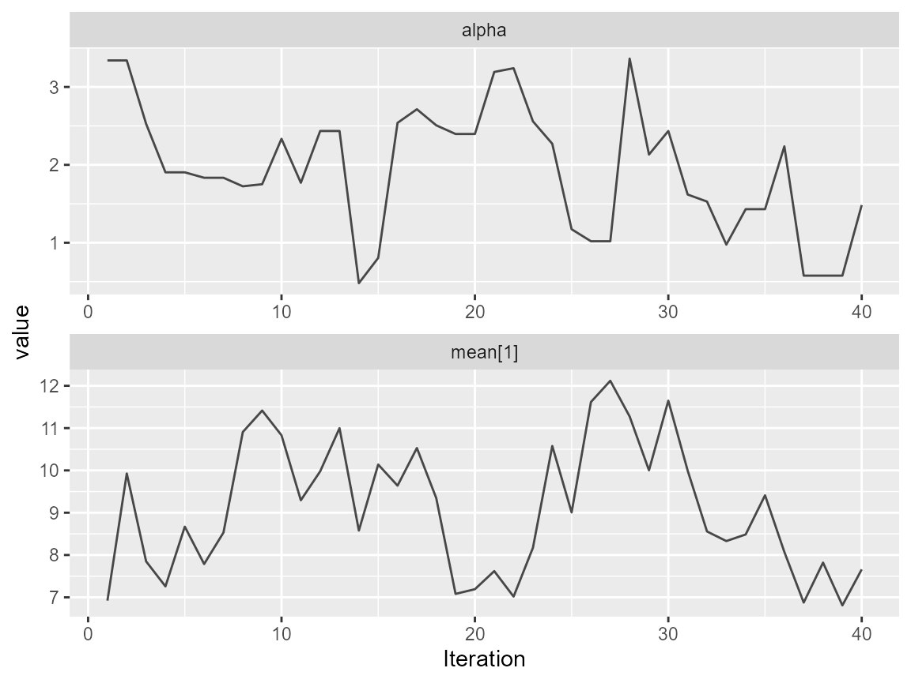
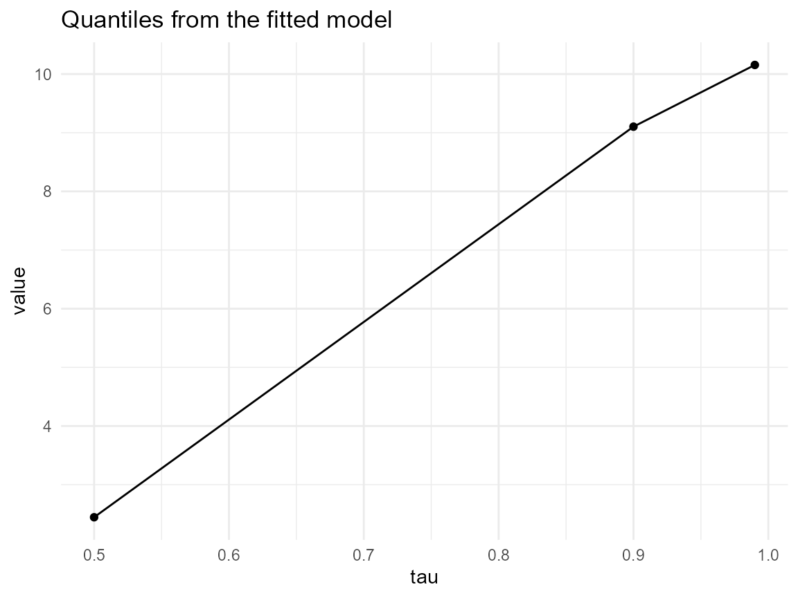
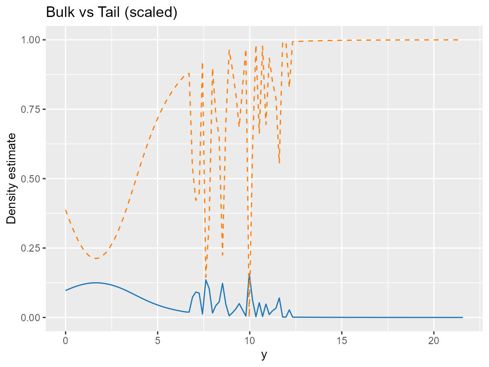

Single-Outcome Modeling
Source:vignettes/v02-single-outcome-modeling.Rmd
v02-single-outcome-modeling.Rmd
set.seed(42)
n <- 120
x <- rnorm(n)
y <- sim_bulk_tail(n, tail_prob = 0.18)
J <- 6
bundle <- build_nimble_bundle(
y = y,
X = data.frame(x = x),
backend = "sb",
kernel = "lognormal",
GPD = TRUE,
J = J,
mcmc = list(niter = 200, nburnin = 50, thin = 1, nchains = 2, seed = c(1, 2))
)
if (use_cached_fit) {
fit <- fit_small
} else {
fit <- run_mcmc_bundle_manual(bundle)
}
summary(fit)
#> MixGPD summary | backend: Stick-Breaking Process | kernel: Normal Distribution | GPD tail: FALSE | epsilon: 0.025
#> n = 80 | components = 3
#> Summary
#> Initial components: 3 | Components after truncation: 3
#>
#> Summary table
#> parameter mean sd q0.025 q0.500 q0.975 ess
#> weights[1] 0.638 0.081 0.524 0.625 0.775 3.535
#> weights[2] 0.211 0.033 0.150 0.212 0.251 8.389
#> weights[3] 0.154 0.055 0.049 0.162 0.225 3.421
#> alpha 1.945 0.818 0.575 1.904 3.341 13.115
#> mean[1] 1.150 0.154 0.876 1.144 1.404 9.376
#> mean[2] 5.956 3.400 2.343 6.970 11.420 15.873
#> mean[3] 6.067 3.332 2.530 3.815 11.671 13.235
#> sd[1] 3.027 1.226 1.385 2.780 5.462 8.118
#> sd[2] 1.110 1.316 0.023 0.059 3.947 3.470
#> sd[3] 1.356 1.652 0.029 0.587 5.270 15.139
Trace plot for tail parameters and weights.
quant <- predict(fit, type = "quantile", p = c(.5, .9, .99))
quantile_df <- data.frame(
tau = c(.5, .9, .99),
value = as.numeric(quant$fit[1, ])
)
ggplot(quantile_df, aes(x = tau, y = value)) +
geom_line() +
geom_point() +
labs(title = "Quantiles from the fitted model", x = "tau") +
theme_minimal()
dense_grid <- seq(0, max(y) + 5, length.out = 120)
bulk_pred <- predict(fit, type = "density", y = dense_grid)
bulk_df <- data.frame(y = dense_grid, density = bulk_pred$fit[1, ])
tail_df <- data.frame(y = dense_grid, density = 1 - bulk_df$density / max(bulk_df$density))
ggplot(bulk_df, aes(x = y, y = density)) +
geom_line(color = "#1f77b4") +
geom_line(data = tail_df, aes(y = density), color = "#ff7f0e", linetype = "dashed") +
labs(title = "Bulk vs Tail (scaled)", y = "Density estimate")
Bulk density (blue) versus tail contribution (orange).
tail_tab <- summary(fit)$table
keep <- tail_tab$parameter %in% c("threshold[1]", "tail_shape")
posterior_table <- tail_tab[keep, c("parameter", "mean", "sd", "q0.500")]
posterior_table <- rbind(posterior_table, data.frame(
parameter = "predictive mean",
mean = mean(predict(fit, type = "mean", nsim_mean = 100)$fit),
sd = NA,
q0.500 = NA
))
knitr::kable(posterior_table, digits = 3)| parameter | mean | sd | q0.500 |
|---|---|---|---|
| predictive mean | 2.958 | NA | NA |
sessionInfo()
#> R version 4.5.2 (2025-10-31 ucrt)
#> Platform: x86_64-w64-mingw32/x64
#> Running under: Windows 11 x64 (build 26100)
#>
#> Matrix products: default
#> LAPACK version 3.12.1
#>
#> locale:
#> [1] LC_COLLATE=English_United States.utf8
#> [2] LC_CTYPE=English_United States.utf8
#> [3] LC_MONETARY=English_United States.utf8
#> [4] LC_NUMERIC=C
#> [5] LC_TIME=English_United States.utf8
#>
#> time zone: America/New_York
#> tzcode source: internal
#>
#> attached base packages:
#> [1] stats graphics grDevices datasets utils methods base
#>
#> other attached packages:
#> [1] ggplot2_4.0.1 nimble_1.4.0 DPmixGPD_0.0.8
#>
#> loaded via a namespace (and not attached):
#> [1] tidyr_1.3.2 sass_0.4.10 future_1.68.0
#> [4] generics_0.1.4 renv_1.1.5 lattice_0.22-7
#> [7] listenv_0.10.0 pracma_2.4.6 digest_0.6.39
#> [10] magrittr_2.0.4 evaluate_1.0.5 grid_4.5.2
#> [13] RColorBrewer_1.1-3 fastmap_1.2.0 jsonlite_2.0.0
#> [16] GGally_2.4.0 purrr_1.2.0 scales_1.4.0
#> [19] codetools_0.2-20 numDeriv_2016.8-1.1 textshaping_1.0.4
#> [22] jquerylib_0.1.4 cli_3.6.5 rlang_1.1.6
#> [25] parallelly_1.46.0 future.apply_1.20.1 withr_3.0.2
#> [28] cachem_1.1.0 yaml_2.3.12 otel_0.2.0
#> [31] tools_4.5.2 parallel_4.5.2 coda_0.19-4.1
#> [34] dplyr_1.1.4 globals_0.18.0 ggstats_0.11.0
#> [37] vctrs_0.6.5 R6_2.6.1 lifecycle_1.0.4
#> [40] fs_1.6.6 htmlwidgets_1.6.4 MASS_7.3-65
#> [43] ragg_1.5.0 pkgconfig_2.0.3 desc_1.4.3
#> [46] pkgdown_2.2.0 bslib_0.9.0 pillar_1.11.1
#> [49] gtable_0.3.6 glue_1.8.0 systemfonts_1.3.1
#> [52] tidyselect_1.2.1 tibble_3.3.0 xfun_0.55
#> [55] knitr_1.51 farver_2.1.2 htmltools_0.5.9
#> [58] igraph_2.2.1 labeling_0.4.3 rmarkdown_2.30
#> [61] compiler_4.5.2 S7_0.2.1 ggmcmc_1.5.1.2